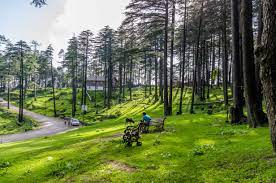
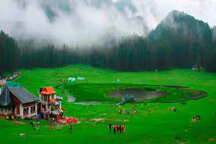

Jammu & Kashmir/ Shimla
1.Srinagar:

Silk-sunset, certain shades of white, tar on the roads, gloom beyond the oil lamp floating over the lake, ripples in the water, fog on the mirror, garden of the spring, the palace of the fairies, subject of the poems, emptiness in the eyes, absence of words, forever in ordinary things and the old roses on a breeze, where love arrives in memories of forever to liberate us into life – Srinagar! The tourist places in Srinagar offer breathtaking views and mesmerising locations to die for.
Srinagar wakes up with Fajr (pre –dawn prayers) and zikr where life sings winter melodies on nine bridges, connecting the city that smells of heaven on both sides of Jhelum River, a river that passes through the city, meanders through the valley, deepening into the traveler’s paradise – Dal Lake.
The city takes on the morning light mirroring the mountains, when the moon still hangs pale over the tranquil Dal Lake, which ornaments an array of alluring houseboats where the lovers’ find home watching a promise of the snow filling up the woods. The lake’s less urbanized eastern shore is decorated with the Mughal gardens that speaks of history strung out for several kilometers. The subdued fortress and the familiar wooden mosques of the old times makes a mark at the center of the city in this era of remembering all that once existed. Easy wind, downy flake and the promises to keep between the woods and frozen lake, Srinagar awaits for you, to dream within a dream. So, come and explore the best tourist places in Srinagar.
2. Katra:
Set cozily amidst the lower Himalayan ranges, Katra is a tiny quaint town serving as a jump-off spot for the greatest pilgrimage site of the country, Mata Vaishno Devi Temple. Propelling millions of pilgrims and spiritual seekers from across the world, this place gets a heavy influx of tourists each year.
Visitors flocking to this place, undertake a rough 13.5 kilometers long trek in order to arrive at the temple. It is believed that taking this challenging trail to reach the Shakti Peetha can manifest the devotion of the pilgrims and fulfill their desires.
Packed with many viewpoints, Katra is also known for its picturesque sights. Spots like Baba Dhansar, Himkoti, and Banganga make for amazing destinations for unwinding and enjoying nature to the fullest.
3. Patnitop:

Packed with panoramic sights of the majestic Himalayas and never-ending meadows, Patnitop is one of the perfect tourist places near Jammu for experiencing natural beauty at its best. Flaunting bountiful natural sceneries and accessorized with soul-stirring adventure sports such as trekking and skiing, the place is a paradise for avid photographers and adventurers.
In addition to natural charms and sports, Patnitop is also a home to many ancient temples and shopping destinations. Tourists visiting this place always make it a point to buy Pashmina shawls, Kashmiri handicrafts, and dry fruits.
4. Dalhousie:

If you are looking for a serene and calm location to harmonize your soul, then Dalhousie would be an ideal place. The galore of luscious meadows with a mesmerizing blend of fir and pine trees would enlighten your body and mind for a memorable experience. This stunning hill station is ideal for family vacations and romantic honeymoons, and even foreign tourists prefer to visit this impeccable location.
There are many eminent places in Dalhousie, which should be a must-visit on your list. You would certainly feel like in fairyland by witnessing nature’s imperious form in many parts of this stunning hill station. Khajjiar is a popular spot in Dalhousie, and its astonishing beauty gives it the title of “ Switzerland of India.” This glorious place would certainly take your breath away with its lush greenery and alluring atmosphere. Along with the spell bounding meadows, Khajjiar is also renowned for its divine temples.
For all the adventurous freaks, activities like Paragliding, Zorbing, and trekking are regularly organized in different locations of Dalhousie. You should also witness the astonishing site of Satdhara Falls for a rejuvenating experience. With incredible therapeutic properties, the waterfalls are quite efficient against several ailments. This place is also ideal for trekking, with a soul-stirring experience of witnessing nature’s imperious form.
For an enthralling excursion trip with friends and family, Panch Pulla should be your ideal destination. Astonishing view of waterfalls, exuberating picnic spots and an adventurous trek awaits you at this spot! For people who are intrigued by the menacing wildlife, Kalatop wildlife sanctuary is home to incredible creatures like Leopard, Himalayan Black Marten, Bear, and jackal. Witnessing such beautiful creatures would certainly send chills through your spines! Thus Dalhousie is one place in Himachal which is ideal for every travel aficionado.
5. Kangra:
Kangra, located in the state of Himachal Pradesh at the foothills of the Dhauladhar range, is an extremely popular tourist destination, and for great reasons! This ancient town was believed to have been established in the 4th-century and has changed hands between Mughal, Katoch, Sikh, and Gurkha dynasties, reaffirming its historical importance. These legends have made Kangra into a famous destination that not only has glorious natural attractions but also important man-made ones like ancient temples and forts along with a rich cultural fabric.
Due to its location, it offers the perfect mountainside escapade into the crisp & clear air and serene beauty that’s peaceful and calm, away from the bustle of city life. Travellers come back rejuvenated after soaking in the glorious views and spending time in amazing adventure activities like trekking here. Nature enthusiasts love to spend time in miles of densely forested meadows, thunderous waterfalls, and picturesque lakes that reflect the surrounding snowlines in their crystal clear waters.
Kangra is one of the few mountain towns that are an important seat for ancient Indian art and paintings, which make the already beautiful landscape even richer. Visiting Kangra and seeing the museums and forts here is nothing short of a quick lesson in history. It houses preserved ancient artefacts and architecture in the form of forts and temples.
The place is a haven for people who love to try rustic and native foods as well. It is the best place to indulge in delicious Pahari cuisine including foods like Madra, Bhey, Chha Gosht, Siddu, Babru, trout dishes, and Aktori.
6. Gulmarg:
The nearest India can make to being a ski resort is via its pine-fringed Gulmarg. Situated at an elevation of 2730 meters above sea level, it well justifies the Meadow of Flowers tag that it has received. The meadow is given a visual highlight by the 1890s Anglican Church of St Mary’s that sits on a lonely hillock which can be accessed off the dead-end road that links the 1965 neo-colonial style Hotel Highlands Park to the historic Gulmarg Golf Club. However, the key reason to visit Gulmarg is just not the same.
You must visit Gulmarg to explore the backing stands of the splendid mature pines traversing you to the elevation of bald Mt Afarwat. To make it to mountain, you can either trek on foot or take help from ponies at a meagre amount of INR 300 per hour. However, the easiest way out is using the two-stage gondola cable car that flutters you to 3747m. The impressive clear day views from the top are worth the ride. During this ride, you’ll encompass Nanga Parbat which is the world’s ninth highest mountain peak located across Pakistan.
7. Shimla:

Among the most popular hill stations in India, Shimla holds a distinct place owing to its unique charm. Located at a distance of 342 km from the national capital, Delhi, Shimla is a great choice for a weekend getaway from Delhi and Chandigarh since there are so many places to visit in Shimla. Shimla is the capital city of Himachal Pradesh, and all it possesses and all it offers helps it easily justify its reputation and position as the capital city of a beautiful state, widely known for adventure activities and natural wonders. Laden with beautiful, dense forests of Pine, Oak, and Deodar, Shimla is refreshing in its very existence.
The picturesqueness of this beautiful hill station makes it an apt destination for photographers looking for perfect frames and nature enthusiasts who want explore the nature in its pristine form. It is quite interesting that despite being home to a large population, the biosphere of Shimla is still in an excellent form. Shimla exhibits a very relaxing mood to those who visit it in search of tranquility.
Due to the plenty of activity options available here, Shimla is emerging as a popular destination for offbeat travel as well. People from all over India and beyond visit Shimla to experience an adventure which makes it a major hotspot for adventure activities in northern India. It is also home to some beautiful places with spectacular views, and some truly magnificent specimens of architecture can be found in Shimla.
Shimla houses some beautiful Hindu temples, located at apt locations, offering spectacular views of the beautiful hill station and the nearby hills with a thick covering of green forests. Some of the most revered temples in Shimla are Jakhoo Temple, Tara Devi Temple, Mansa Devi Temple, etc. These temples are located at short distances from the city center, so if you prefer, you can trek up to these temples through the woods. Shimla has a plethora of interesting places to visit and explore. As Shimla once served as the Summer Capital of British India, some captivating buildings with brilliant neo-Gothic architecture exist here.